Diablo Hub
Runewords a legacy obsah Season 15 — Diablo IV
Recepty na runewords (pořadí run do soketů nalevo, kompletní tooltip s efektem, vzácností a staty napravo, označ runy, který máš — dokreslí se, co ti chybí), plus skrytý legacy obsah, co Season 15 vrátila ze starších Diablovek — Whimsyshire, Pandemonium Event v Tristramu a Ogdenova cedule.
Jak runewords fungují
- Runeword = 2 až 5 run vložených do itemu se stejným počtem soketů, přesně v tomhle pořadí zleva doprava.
- Skládá se přes Horadric Cube recept — každý recept existuje ve verzi normal i ancestral.
- Výsledný item je Unique s pevnými afixy, nejde temperovat.
- Otazník (?) u statu = hodnota zatím není v datech vyčíslená, dorovná se před vydáním.
Vaše runy
Klikni na runy, který máš v truhle — dole se přepočítá, co je hotový a čemu chybí jedna runa. (Bere se jen to, jestli runu vlastníš, ne kolik kusů.)
Vylepšování run v Horadric Cube
Nižší runy se dají postupně přetavit na vyšší — vezmi daný počet stejných run (a případně gemu) a vyrob vyšší runu.
Další (quest) recepty
Tyhle recepty zatím nemají obrázky itemů — jen text, doplní se, až budou k dispozici.
Whimsyshire se vrací (Season 15)
Diablo IV přineslo v Season 15 kus legacy obsahu z Diabla III — a hráči objevili Whimsyshire. Duhy, zlí plyšáci a jednorožci, původně jenom vtip v D3, teď (o něco míň psychedelicky) i v D4.
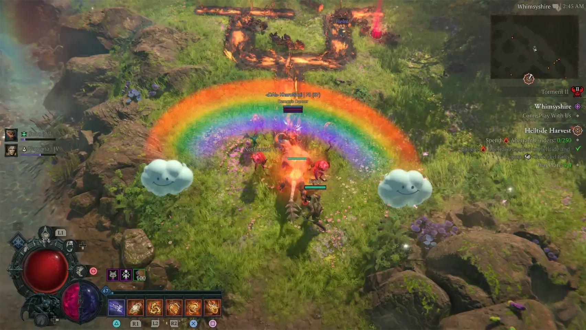
Whimsyshire je level plný přesně toho, co název slibuje — duhy, zlí plyšový medvídci a jednorožci. Originál byl v Diablu III jenom easter egg, teď se s návratem legacy obsahu v Season 15 dá zažít i v Diablu IV.
Jak se tam dostat
Dokonči Waking Nightmare
Hráči hlásí, že po dokončení Waking Nightmare se jim náhodně otevřel portál do Whimsyshire. Vypadá to na náhodnou událost bez způsobu, jak si ji vynutit.
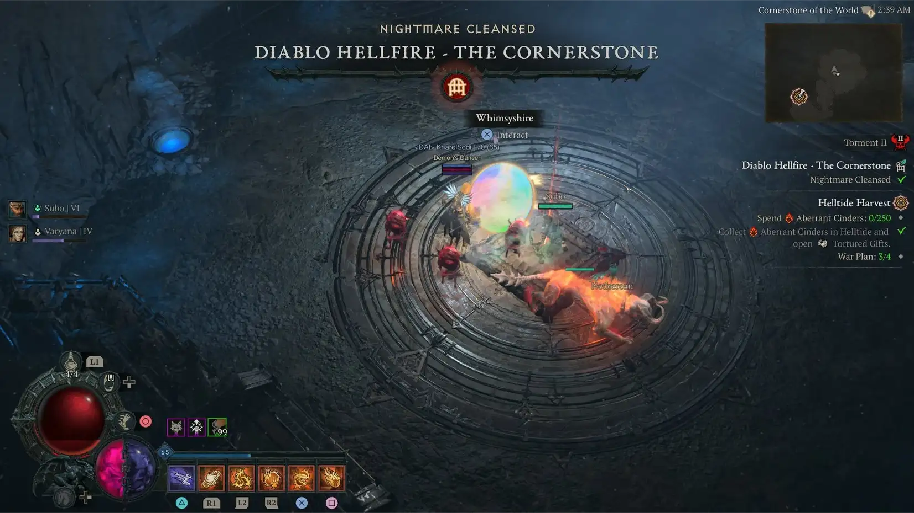
Vypij Liquid Rainbow
Liquid Rainbow je consumable, který může náhodně dropnout kdekoliv ve světě. Garantovaně ho dostaneš i za 5. tier Season Journey. Po vypití se otevře portál do Whimsyshire rovnou tam, kde stojíš.

Zabij Goblina
Hráči hlásí Goblina v Helltide, po jehož zabití se otevře portál do Whimsyshire. Potvrzeno u Murla (Obols Goblin), zatím se ověřuje, jestli to jde i s ostatními.
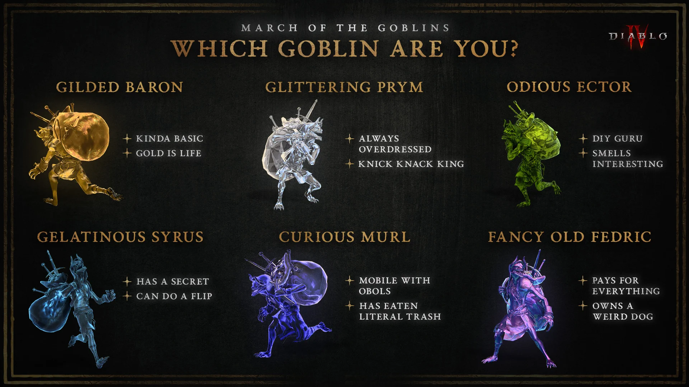
Info se sbírá průběžně z hlášení hráčů, ještě se může upřesnit.
Kompletní postup (patch 3.2.1)
- Dokonči kapitolu 5 Season Journey — Liquid Rainbow je jedna z odměn (samotný popis kapitoly mluví jen o vyčištění Worldstone Keep, o lektvaru mlčí).
- Vypij Liquid Rainbow — "The colors swirl and twist in hypnotic patterns."
- Otevře se portál jménem Whimsyshire.
- Dojdi do Den of Whimsy a zabij bosse Neigh'relle — čeká tam v questu "Sparkling Happiness and Rainbows".
Co tě uvnitř čeká
- Unicorns, Cuddle Bears, Twinkleroot a Happy Clouds
- Candy Jars a dárkové truhly s Armor and Weapon Gifts
- Truhly Soup a Resplendent Soup
- Dva pojmenovaní jednorožci: Donut a Lore-ass
Echo of Tristram — návrat Pandemonium Eventu
Season 15 vrací starý Pandemonium Event z Diabla II — Diablo, Baal a Mephisto najednou v jedné aréně, za portálem, který otevřeš mincí hozenou do kašny v Tristramu.
O co jde
Echo of Tristram je skrytá lokace mimo běžnou sezónní verzi Tristramu, navázaná na quest „No prayer reaches this place“. Aby se zpřístupnila, musíš nejdřív posbírat tři konzumovatelné itemy (Splintery), přetavit je v Horadric Cube na Wirt's Lucky Coins a jeden hodit do kašny uprostřed města. V aréně na tebe pak čekají ozvěny všech tří Prime Evils naráz.
Krok 1 — Seber všechny tři Splintery
Splintery dropují z Capstone dungeonů na Torment X — Diablo nechává Splinter of Terror, Baal Splinter of Destruction a Mephisto Splinter of Hatred. Podmínky dropu: ještě ho nesmíš mít, musí být aktivní Season 15 a dungeon musí být na dostatečně vysokém Tormentu. Hra to interně váže na Torment 10, reálně ale hráči hlásí droppy i z nižšího Tormentu (Torment 7), takže na to číslo úplně nespoléhej.
Splinter je Unique Consumable, nejde ho prodat ani rozložit, a najdeš ho v záložce lektvarů vedle elixírů. Použitím se přepneš na daný "pledge" a hra ti nedovolí použít ten, na kterém už jsi. Používat je ale nemusíš vůbec — klidně si drž všechny tři najednou, dokud je nebudeš potřebovat do kostky.
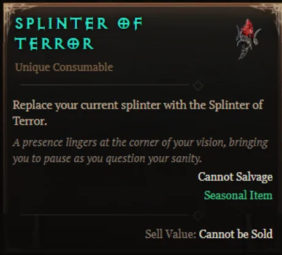
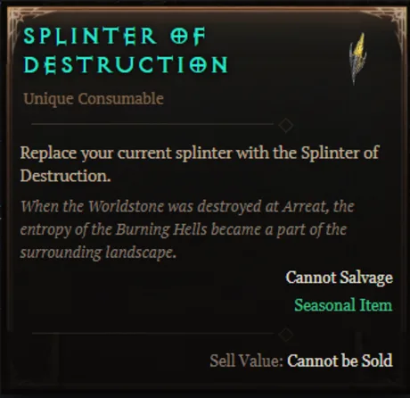
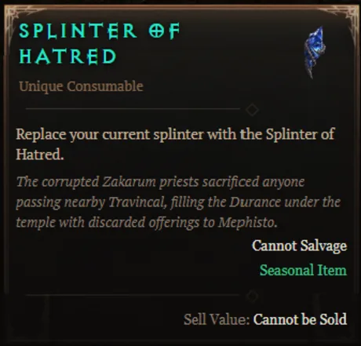
Krok 2 — Slož je na Wirt's Lucky Coins
V Horadric Cube je skrytý recept — po jednom kuse Terror, Destruction a Hatred dohromady dají Wirt's Lucky Coins. Recept se v kostce neukáže, dokud nemáš všechny tři suroviny najednou, stejně jako u runewords v Diablu II.
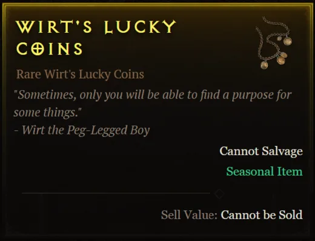
Krok 3 — Otevři cestu do Tristramu
Tristram je tuhle sezónu samostatná zóna. Dostaneš se do ní portálem Deckard's Memory v Imperiální knihovně v Caldeu, hned u waypointu — jenže ten portál neexistuje, dokud nedokončíš vedlejší quest Deckard's Journey. Ten quest nikde v hlavní příběhové lince nenajdeš, nikdo tě k němu nenasměruje.
Po dohrání úvodu v hospodě v Tarsaraku se po Sanctuary rozmístí deset váčků s Deckardovým deníkem (otevřený váček se svitkem). Jakmile přečteš všech deset, quest se spustí sám, Cain ti ukáže poslední vzpomínku a ta vzpomínka je portál do verze Tristramu z prvního Diabla. Zůstane pak otevřený natrvalo.
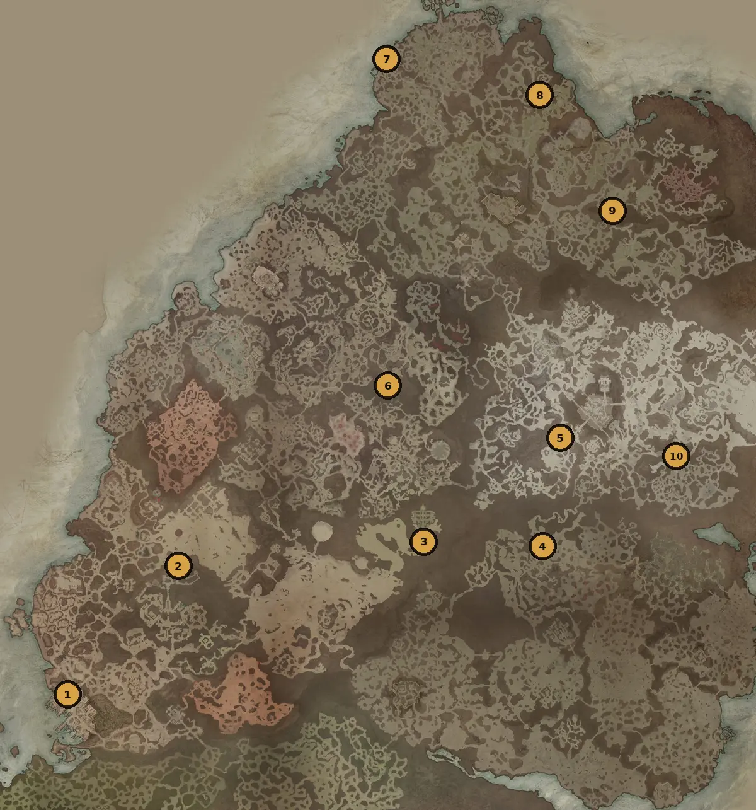
Čísla na mapě odpovídají pořadí deníkových útržků níž — polohy podle nejbližšího waypointu nebo vchodu do doupěte, sever nahoře.
Jihozápadně od waypointu Gea Kul — plavba přes moře.
Tolik velkých příběhů začíná plavbou přes moře. Vasilyho cesta, Rakkisova křížová výprava... Žádný z nich ale doopravdy nevystihl, jak se člověku dělá špatně od žaludku s každým příklonem vln. Ach, Amélie... Potěšilo by tě, že jsem konečně opustil svou studovnu, abych poznal svět venku? Nebo by ses na mě zlobila, že jsem čekal, až zemřeš ty i náš chlapec? Psaní nepomáhá. Modlím se jen, abychom se do Gea Kulu dostali v pořádku. Pevná zem, čerstvý vzduch a brzy... nádherná, suchá knihovna.
U waypointu Imperiální knihovny — dveře se otevřou na jméno Cain.
Od chvíle, co jsem vystoupil na břeh, jsem nedočkavě čekal, až budu moct požádat o přístup do Imperiální knihovny. Přijímají opravdu jen málokoho, takže si představte moje překvapení, když se mi dveře otevřely dokořán... ve chvíli, kdy jsem vyslovil jméno „Cain“. Zdá se, že i po dvou stech letech tu Jered Cain a jeho Horadrimové stále něco znamenají. Dobré znamení, mám-li najít pravdu o jejich příbězích... a možná i své místo v nich. Jered často psal o „truhlici nebezpečných divů“ ukryté v Šassarském moři. Díky těmto topografickým mapám možná konečně vím, kde hledat.
Severně od doupěte Andariel — hodiny bloudění pouští, karavana na obzoru.
(povzdech) Bloudíme touhle spalující pustinou už celé hodiny, a přesto po té „truhlici“ nikde ani stopy. Můj průvodce je připravený odtáhnout mě zpátky do Caldea. Sbalit to a vrátit se domů — ale to nejde. Doma na mě nic nečeká. Na sousední duně jsme zahlédli karavanu vozů. Myslím, že by to mohli být Vecinové — potulní mystikové, o kterých Jered často psal. Ostatně jedny z mých oblíbených jeho příběhů. Můj průvodce říká, že jedou na východ „vnucovat své čarodějnictví“ bažinnému lidu. Uvidím sám.
Severně od waypointu Wejinhani — Zakarumská inkvizice a hledání klidu.
Ach, jaký krásný čas mi Vecinové ukázali. Zpěv u ohniště, příběhy o magii pod hvězdami... ale ve Wejinhani na nás čekalo jen ponuré ticho. Na tuhle zemi dolehla Zakarumská inkvizice. A příchod vyčerpaného, západního učence vzbudil nejedno pozdvižené obočí. Bude lepší, když půjdu dál, než svým novým přátelům přivodím potíže — i když mě to srdce bolí. (povzdech) Potřebuji přemýšlet. Někde v tichu a o samotě, kde se rozhodnu, co vlastně na tomhle nerozvážném dobrodružství ještě dělám. Snad na severu?
Jihozápadně od doupěte Beast in Ice — útočiště před mrazem.
(chvěje se) Díky nebesům jsem našel tuhle chatu, jinak bych určitě zmrzl. Teprve teď, když jsem konečně roztál, si vzpomínám, proč jsem vlastně Tristram opustil. Sedět sám ve své studovně, uši zvonící tichem, které jsi po sobě zanechala. Pořád slyším tvůj hlas, Amélie. Jak mě prosíš, ať odložím knihy a jsem manželem, otcem. Ale teď... čím mám vlastně být teď? Začínám pochybovat, že Jeredovy spisy skrývají odpověď, ale lepšího průvodce nemám. Píše o velkolepém městě travin, starém jako Starý Kehjan. Se štěstím tam bude i hospoda.
Jihozápadně od waypointu Hidden Overlook — svatba v cizí vesnici.
Našel jsem hospodu! A nechal se strhnout do nějaké svatby, tady v... Goolronu? Gu-Gulranu? Ach, tak živé místo, to se budu muset naučit vyslovit! Sotva mě ti lidé zahlédli, nasadili mi na hlavu věnec z obilí a vtáhli mě přímo z ulice dovnitř. (uchechtne se) Zdá se, že tu západňáky moc nevídají, takže jsem tu tak trochu celebrita! Posadili mě vedle dalšího cizince. Chlapa jako medvěd, jménem „Vasily“. Škádlivě jsem se ho zeptal, jestli není ten dávný otec druidů, a on se smíchy celý zrůžověl! (smích) Ach jo, teď na mě křičí, ať už zavřu tu svou zatracenou knihu! Chce mi ukázat, jak se pije jako „pravý námořník z Glenu“. Budiž tedy! Ehm — na Tristram! (uchechtne se)
Jihozápadně od waypointu Marowen — probuzení v cizí posteli.
Probudil jsem se s pocitem, že mám v lebce hrom, dokud jsem neuviděl vlny tříštící se o kamenitý břeh. Zdá se, že jsem to přebral a probral se ve Scosglenu... v cizí posteli, v cizím domě. Opatrně jsem vyšel z pokoje a zahlédl svého přítele Vasilyho, jak sedí u stolu se svou ženou. Rozpaky mě přešly, jakmile se ke mně otočili. Ve tvářích měli naději. Říkají mi, že posvátná mohyla jejich předků byla „poznamenána pekelnou mocí“. A že proto se ztrácejí děti — včetně jejich vlastního syna. Zjevně jsem se v opilosti prohlásil za „učence okultna“ a slíbil pomoc. Jen se modlím, abych ji dokázal splnit.
Severně od waypointu Braestaig — rituál Triune mezi kameny.
Dorazili jsme mezi kameny a našli tam shromážděné druidské starší, klečící kolem děsivé scény. Kosti a rozčtvrcené mrtvoly, rozložené v kruhu z hrubých symbolů. Triunské glyfy. Poznal jsem je z Jeredova „Honu na Trojici“. Vyvolávací rituál. Nejprve je znesvěcen prach dávno mrtvých, poté se z mladých stávají „nádoby“. Prý si rituál žádá úrodnou půdu a odlehlé místo, kde nikdo nebude rušit. Zeptal jsem se Vasilyho, kde by takové místo mohlo být. „Fiefdom House,“ odpověděl. Modlím se, abychom ty děti našli živé. A o nic jiného už nežádám.
Jihozápadně od waypointu Tirmair — kaple, kultisté, zachráněné děti.
Viděli nás přicházet. Šílení kultisté ve špinavých hadrech se na naši skupinu vrhli, jen aby je zdrtily zuřivé rány druidů. Jednomu jsem se podíval do očí, když umíral. Žádný démon. Jen obyčejný člověk. Pak jsme z ticha zaslechli pláč. Šest dětí — vyděšených, ale živých, uvnitř kaple. Když Vasily objal svého syna, otočil jsem se, abych skryl slzy. Zachránil jsem tohoto chlapce, ale nic to nezměnilo na tom, že jsem selhal u svého vlastního. Ucítil jsem na rameni mohutnou tlapu a setkal se s usměvavýma očima druidky. „Ty jsi Deckard Cain. Potomek Jereda Caina,“ řekla. „Naši předkové jsou ti vděční. Říkají, ať toho svého hledáš v lesích Mistral.“
Severozápadně od waypointu Yelesna — třítvárná socha v temném lese.
(uchechtne se) Ach, je nejvyšší čas přiznat, že jsem mizerný dobrodruh. Bloudím touhle temnou hvozdem už celé hodiny a moje jediné vodítko? Ta zatracená třítvárná socha. „Spatři pravdy, jež leží uvnitř,“ stálo na nápisu. Jsou to tvá slova, Jerede? Říkáš mi, že jsem tu odpověď měl celou dobu? Že to byla moje vlastní sobeckost, co odehnala mou rodinu? Že jsem sám... ztracený. Ztracený jsem byl už dávno předtím, než jsem opustil Tristram. Konečně jsem se našel — na ten nádherný okamžik, kdy jsem odložil své nesmysly a udělal se užitečným pro druhé. Bylo dobré cestovat s tebou, Jerede. Ale věřím, že je čas jít domů, k lidem, které jsem opustil, a být užitečný tam.
Krok 4 — Mince do kašny
Než mincí hodíš, přepni si obtížnost na Torment 6 nebo výš — níž se portál neotevře. Kašna stojí v jihovýchodní části Tristramu. Vhoď dovnitř jednu Wirt's Lucky Coin (spotřebuje se jen jedna na pokus, klidně to zkus znovu s další). Otevře se portál Tristram Fountain Portal — vypadá stejně jako Mephistův červený pekelný portál a vede přímo do Echo of Tristram.
Nefunguje to spolehlivě stoprocentně — voda zčervená vždycky, ale pár hráčů hlásí, že jim i tak portál neotevřel a mince přesto zmizela.
Krok 5 — Souboj s Prime Evils
Dojdi do středu Tristramu a boj začne sám — všichni tři Prime Evils naráz. Každého jsi v příběhu potkal zvlášť: Diablo na dně Labyrintu, Baal u Worldstone, Mephisto v Durance of Hate pod Zčernalým chrámem. Teď je máš na krku všechny najednou — Baalovy blesky a chapadla útočí nezávisle na sobě, takže běží pořád, zatímco tě mezitím zpracovávají zbylí dva. Mephisto má tři fáze, Diablo je verze bosse z Labyrintu. Všechny tři jde staggerovat.
Loot z bosse má 15minutový cooldown — zabiješ-li je znovu dřív, nedostaneš nic a časovač se resetuje, takže na plných 15 minut počkej, pokud chceš odměnu. Za zabití padá hromada Mythiců, questovní item Standard of Heroes a unikátní charm Hellfire Torch. Po zabití tě quest pošle zpátky do centra Tristramu.
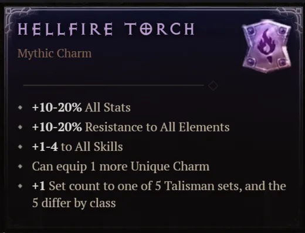
Diablo a Diablo IV jsou ochranné známky Blizzard Entertainment, Inc. Tahle stránka je neoficiální fanouškovský projekt a není s Blizzard Entertainment nijak spojená ani jím podporovaná. Herní data podle veřejně dostupného datamining projektu DiabloTools/d4data (licence MIT).
Ogden's Sign — návrat hospodského
Vedlejší quest v sezónním Tristramu — pomůžeš hospodskému Ogdenovi získat zpátky jeho ukradenou hospodskou ceduli, a jako díky si odneseš jednu z nejsilnějších helem ve hře.
Jak úkol odemknout
Quest se objeví, jakmile v Tristramu promluvíš s Ogdenem. K tomu ale nejdřív potřebuješ mít otevřený portál do Tristramu — a ten se odemyká až po sesbírání všech deseti Deckardových deníků popsaných v sekci Echo of Tristram výš.
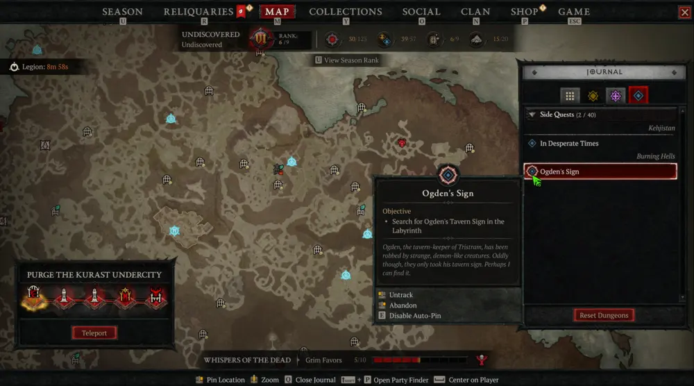
Postup
- Najdi Snotspilla v dungeonu The Labyrinth (Cathedral: Level 2) — je to Capstone dungeon Diabla, takže na cestu tam bude potřeba i solidní vybavení.
- Promluv se Snotspillem o Ogdenově ceduli — spustí ti to hledání uvnitř dungeonu.
- V další místnosti Cathedral: Level 2 najdi truhlu uprostřed — obsahuje Tavern Sign, kterou hledáš.
- Vrať se do Tristramu a ceduli odevzdej Ogdenovi.
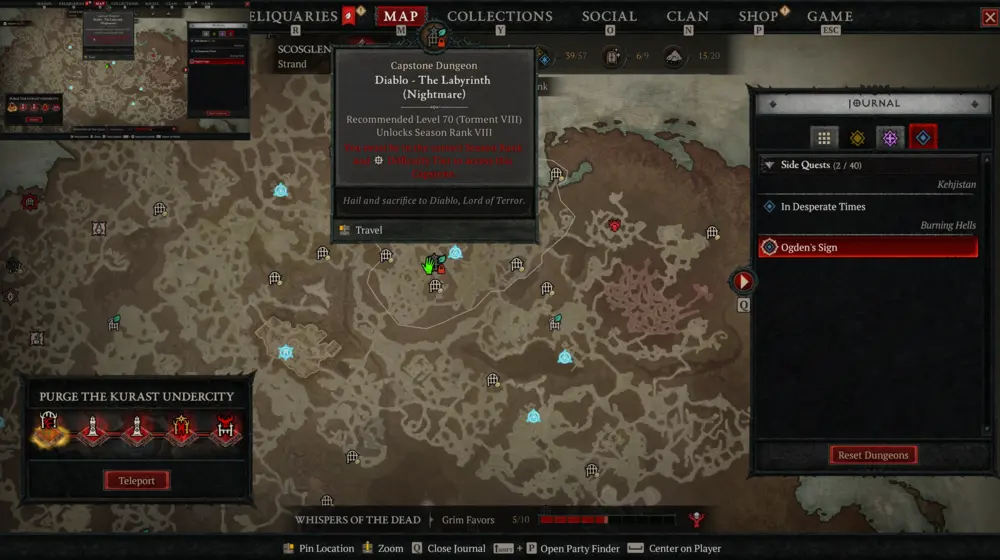
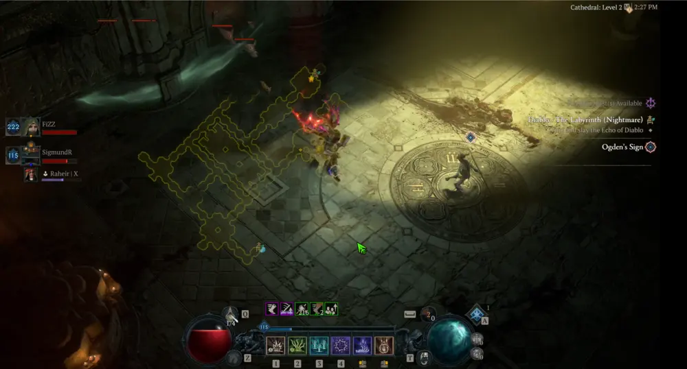
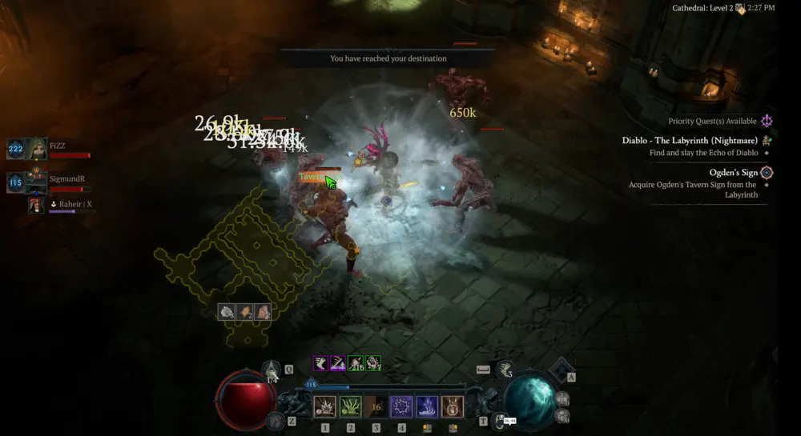
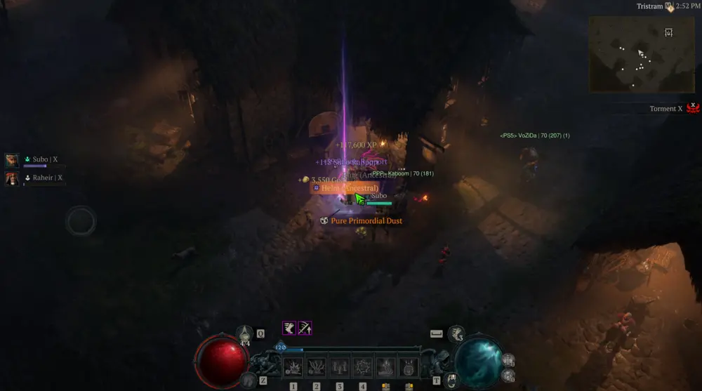
Odměna
Za vrácení cedule dostaneš Harlequin Crest — Mythic Unique helmu, která dává +6 Rank to All Skills. Jedna z nejvyhledávanějších helem v aktuální sezóně.
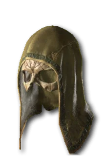
Videa k tématu
Pár videí z mýho kanálu, co se týkají runewords a legacy obsahu Season 15.